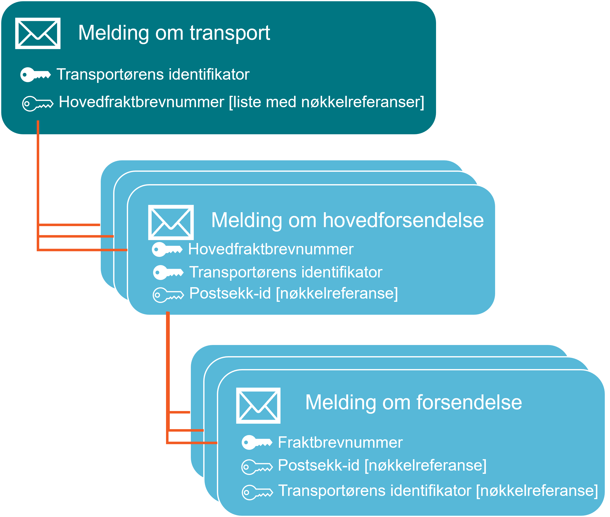

English
EnglishOm tjenesten
Tjenesten skal støtte å oppfylle melde- og opplysningsplikten digitalt og automatisert i henhold til vareførselsloven § 2-3 og tilhørende forskrift.

Se også: API for vei/ferge
Definisjoner
| Begrep | Engelsk navn | Beskrivelse |
|---|---|---|
| Forsendelse | House Consignment | En forsendelse er en samling varer som skal sendes fra en avsender til en mottaker. En forsendelse er identifisert gjennom et fraktbrevnummer utstedt av den part som avsender har en avtale med for å besørge transport til mottaker. |
| Hovedforsendelse | Master Consignment | En hovedforsendelse er en samling av forsendelser som skal sendes fra en avsender til en mottaker. En hovedforsendelse er identifisert gjennom et hovedfraktbrevnummer utstedt av den part som avsender har en avtale med for å besørge transport til mottaker. |
| Transport | Transport | En transport i kontekst av melde- og opplysning definerer et fysisk transportmiddel, dets fører og last. Last i denne sammenhenger definert av hovedforsendelser og forsendelser. |
| Transportmiddel | Active Border Transport Means | Et transportmiddel i kontekst av melde- og opplysning er en bil, et luftfartøy, et tog eller et fartøy som har egen fremdrift og frakter last over grensen til Norge. |
| Innsender | Submitter | Innsender er den som sender inn meldinger til Tolletaten. Merk at innsender og tollrepresentant kan være samme aktør. |
| Tollrepresentant | Representative | Tollrepresentant er en som handler på vegne av den fører og i førers navn i følge vareførselsloven §7-21. |
| Fører | Operator | Fører er den som fører transportmiddelet, og er den som er ansvarlig for å oppfylle melde og opplysningsplikten i følge vareførselsloven §2-3. |
| Transportutstyr | Transport Equipment | I kontekst av melde og opplysningsplikten er transportutstyr en beholder som blir brukt for å frakte en eller flere forsendelser eller hovedforsendelser i, og som ikke har egen fremdrift. Det inkluderer tilhengere, semi-trailere, containere, tanker, paller etc. |
| Beholder | Container | I kontekst av melde og opplysningsplikten er en beholder en måte å definere transportutstyr. Se transportutstyr. |
Funksjonell beskrivelse av tjenesten
Tjenesten skal gjøre det mulig for aktører i næringslivet å oppfylle melde- og opplysningplikten digitalt. I tillegg legger tjenesten opp til å i størst mulig grad automatisere de steg i prosessen der det er mulig.
Konseptuelt er den delen av tjenesten som er beskrevet her opptatt av å betjene innsending av opplysninger på en slik måte at det sikrer Tolletatens behov for risikovurdering og kontroll og samtidig legger til rette for automatisering av øvrige steg.
Tjenesten legger opp til at meldinger om forsendelser, hovedforsendelser og
transport kan sendes inn så tidlig som mulig og uavhengig av hverandre.
Likevel er det viktig å merke seg at seinest ved grensepassering må helheten av
informasjon som er sendt inn til Tolletaten tilfredsstille de krav som gjelder
for melde- og opplysningsplikten.
Det betyr at de forskjellige informasjonselementene må henge sammen, med nøkler
oppgitt av innsenderne, og at de nødvendige referanser er på plass der det
kreves.
Innsender av en melding har mulighet til å
sende inn en melding tidlig, oppdatere meldingen og trekke tilbake meldingen
ved behov (post, put, delete).
Innsender kan be om status på meldingen (get).
Innsender kan sende inn meldinger helt til transport ankommer grensen. Ved grensepassering må informasjonen som er levert være komplett for transporten, dens hovedforsendelser og forsendelser.
Informasjon sendes inn på tre nivåer:
- Transport, som inneholder
- Hovedforsendelser, som inneholder
- Forsendelser
- Hovedforsendelser, som inneholder
Informasjon og meldinger
API-ene støtter innsending av opplysninger knyttet til melde og opplysningsplikten for post, ekspress, flyfrakt, kjøretøy på vei og ferge i henhold til vareførselsloven § 2-3 og forskrift om inn- og utførsel av varer.
API-ene for innsending er delt i 3 forskjellige meldinger:
- en for innsending av opplysninger knyttet til transport
- en for innsending av opplysninger knyttet til hovedforsendelse
- en for innsending av opplysninger knyttet til forsendelser
Meldingene sendes inn hver for seg og uavhengig av hverandre med tanke på
både rekkefølge og avsender.
Melding om transport skal, ved grensepassering, inneholde en liste med
sporingsnummer til alle hovedforsendelsene som skal være med på transporten
Forsendelse knyttes til hovedforsendelsen på to forskjellige måter:
- ved hjelp av at fraktbrevnummer til hovedforsendelsen oppgis i melding om forsendelse (skal brukes av alle andre enn post-operatører)

eller
- ved hjelp av at postsekk-id er referert både i forsendelse og i hovedforsendelse (kun i bruk for post-operatører)

For alle meldinger vil det være et sett med data som kun er relatert til meldingen og innsending av denne. I disse data inngår informasjon om tollrepresentant og identifikasjon av melding (referanser til selve meldingen).
Dataelementer knyttet til transport
| Dataelement | Obligatorisk | Betinget | Frivillig |
|---|---|---|---|
| Transportør | X | ||
| Aktivt transportmiddel | X | ||
| Fører | X | ||
| Transportutstyr | X | ||
| Tollsted / tid for ankomst | X |
Dataelementer knyttet til hovedforsendelse
| Dataelement | Obligatorisk | Betinget | Frivillig |
|---|---|---|---|
| Avsender | X | ||
| Mottaker | X | ||
| Fraktbrev | X | ||
| Relevante dokumenter | X | ||
| Bruttovekt | X | ||
| Transportutstyr | X | ||
| Lastested | X | ||
| Lossested | X |
Dataelementer knyttet til forsendelse
| Dataelement | Obligatorisk | Betinget | Frivillig |
|---|---|---|---|
| Avsender | X | ||
| Mottaker | X | ||
| Fraktbrev | X | ||
| Relevante dokumenter | X | ||
| Fraktkostnader | X | ||
| Bruttovekt | X | ||
| Transportutstyr | X | ||
| Lastested | X | ||
| Lossested | X |
Dataelementer knyttet til vare (sendes inn som en del av forsendelse) – kun for VOEC
| Dataelement | Obligatorisk | Betinget | Frivillig |
|---|---|---|---|
| Fakturert verdi | X | ||
| Varenummer | X | ||
| Antall kolli | X | ||
| VOEC-nummer | X |
Melding om transport
| Område | Beskrivelse |
|---|---|
| Melde transport | Informasjon om transport og referanse til alle forsendelsene om bord i transporten |
| Ansvarlig for informasjonen | Fører av transport, ref vareførselsloven § 2-3 |
| Avgiver av informasjon | Speditør/Transportør/Vareeier/Tollrepresentant |
| Mottaker av informasjon | Tolletaten |
| Er informasjon obligatorisk? | Ja |
| Når ønskes informasjon hos Tolletaten? | Så tidlig som mulig, dog senest ved ankomst til grensen |
| Når ønskes oppdatering av informasjonen? | Informasjon må oppdateres når viktige deler av informasjonen endres. Typisk ved endring av kjennemerker, fører, tid/sted for grensepassering, ved endringer i listen av hovedforsendelser |
| Frist for innsending | Senest ved grensepassering |
| Viktige informasjonselementer |
Kjennemerke(r) på transportmiddel og/eller rutenummer for rutegående trafikk (for eksempel rutefly) Informasjon om fører Tid/sted for grensepassering Referansenummer/fraktbrevnummer for alle hovedforsendelser (Master Consignment) som skal være med transporten |
| Spesielt om oppdatering av melding om transport | Ved oppdatering og kansellering er MRN mottatt i opprinnelig melding den nøkkelen som skal brukes for å identifisere riktig transport |
Melding om hovedforsendelse (Master Consignment)
Oppsummering av innhold
| Område | Beskrivelse |
|---|---|
| Melde hovedforsendelse | Informasjon om hovedforsendelse |
| Ansvarlig for informasjonen | Fører av transport, ref vareførselsloven § 2-3 |
| Avgiver av informasjon | Speditør/Transportør/Vareeier/Fullmektig |
| Mottaker av informasjon | Tolletaten |
| Er informasjon obligatorisk? | Ja |
| Når ønskes informasjon hos Tolletaten? | Så tidlig som mulig, dog senest ved grensepassering for transport |
| Når ønskes oppdatering av informasjonen? | Informasjon må oppdateres når viktige deler av informasjonen endres |
| Frist for innsending | Senest ved grensepassering |
| Viktige informasjonselementer |
Mottaker og avsender Laste- og lossested Fraktbrevnummer til hovedforsendelse Referansenummer til alle postsekker (kun for post-operatører) |
| Spesielt om oppdatering av hovedforsendelse | Ved oppdatering og kansellering er MRN mottatt i opprinnelig melding den nøkkelen som skal brukes for å identifisere riktig hovedforsendelse |
Melding om forsendelse (House Consignment)
Oppsummering av innhold
| Område | Beskrivelse |
|---|---|
| Melde forsendelse | Informasjon om forsendelse. |
| Ansvarlig for informasjonen | Fører av transport, ref vareførselsloven § 2-3 |
| Avgiver av informasjon | Speditør/Transportør/Vareeier/Fullmektig |
| Mottaker av informasjon | Tolletaten |
| Er informasjon obligatorisk? | Ja |
| Når ønskes informasjon hos Tolletaten? | Så tidlig som mulig, dog senest ved ankomst til grensen |
| Når ønskes oppdatering av informasjonen? | Informasjon ønsker oppdatert når viktige deler av informasjonen endres |
| Frist for innsending | Senest ved grensepassering |
| Viktige informasjonselementer |
Fraktbrevnummer til forsendelsen (sporingsnummer) Referanse til valgt tollprosedyre der det er aktuelt Referanse til import og eksport deklarasjoner Referanse til NCTS transittering(er) Grov varebeskrivelser/vekt Avsender Mottaker |
| Spesielt om oppdatering av melding om forsendelse | Ved oppdatering og kansellering er MRN mottatt i opprinnelig melding nøkkelen som skal brukes for å identifisere riktig forsendelse. |
Sekvens for innsending av meldinger
Generelt fungerer innsending av informasjon slik at aktøren sender inn en
melding (post) og mottar en referanse (requestId).
Ved å bruke den mottatte referansen kan aktøren spørre (get) om resultat av
innsendingen og ved suksess motta en permanent referanse til meldingen, utstedt
av Tolletaten.
Dette gjøres på et eget spørre-API (query API) linket til lengre nede på denne
siden. Disse tjenestene er asynkrone og man må derfor spørre inntil man får
svar.
Spørring gjøres på /validation-status-endepunktet, som vil returnere MRN ved
suksess og en liste med valideringsfeil hvis de finnes.
Den permanente referansen blir kalt et Master Reference Number, eller MRN for
kort.
MRN brukes når meldinger skal oppdateres eller kanselleres (put/delete) for å
referere til tidligere innsendte meldinger.
Fremlegging og kontrolldirigering
Tolletaten vil forsøke å automatisk detektere ankomst av transport ved
grensepassering. Dersom automatisk ankomst blir detektert vil Tolletaten
gjennomføre en automatisk digital fremlegging av alle forventede forsendelser
på den ankommende transport.
Deretter vil Tolletaten gjøre dirigering tilgjengelig i vårt API for de
forventede forsendelsene. Aktører som er koblet til de fremlagte
forsendelser vil kunne hente ut kontrolldirigering på API.
De aktører som automatisk er slik koblet er den aktøren som sendte inn
informasjon om forsendelsen i Tolletatens API (autentisert i Maskinporten) og
eventuell tollrepresentant nevnt i melding om forsendelse, hovedforsendelse
eller transport.
Tjeneste for fremlegging
Tjenesten brukes for digital oppfyllelse av fremleggelsesplikten
(Vareførselsloven § 2-4.Fremleggelse av varer for kontroll).
Tjenesten kan benyttes felles for sendinger som er omfattet av melde-
og opplysningsplikten og/eller som er forhåndsmeldt til EU
i ICS2-løsningen.
Fremlegging (API: movement-presentation)
kan meldes for
forsendelser som er meldt inn på forhånd gjennom de to nevnte plikter, det vil
si de forsendelser som er forventet fremlagt.
Fremlegging kan gjøres ved å fremlegge en hovedforsendelse, en forsendelse eller en postsekk innsendt for melde og opplysningsplikten. Dersom en postsekk eller en hovedforsendelse fremlegges, vil alle forsendelser under denne bli fremlagt. En part som fremlegger forsendelser (gjennom overnevnte API), og ikke før er koblet til forsendelsene, vil da bli koblet, og kan derfor hente ut kontrolldirigeringer for de samme forsendelsene.
For forhåndsmelding (ICS2), kan fremlegging gjøres for en hel forflytningsdeklarasjon (ENS), en postsekk eller enkeltsendinger. Dersom en postsekk eller en forflytningsdeklarasjon fremlegges, vil alle enkeltsendingene under denne bli fremlagt.
Kontrolldirigering – respons
Den som har fremlagt sendingene, automatisk av Tolletaten eller ved egen fremlegging, skal bruke tjenesten for kontrolldirigering (API: movement-routing). Basert på resultatet fra kontrolldirigering skal aktøren plukke ut sendingene som skal fysisk kontrolleres. Disse sendingene skal snarest overleveres avtalt kontrollsted.
Når en aktør ber om dirigering gjennom å bruke tjenesten for
kontrolldirigering (API:
movement-routing) vil Tolletaten
svare med én dirigering per forsendelse (House Consignment).
Dersom forsendelsen er meldt inn gjennom forhåndsvarsel (ICS2), det vil si
gods fra tredjeland (utenfor EUs sikkerhetssone), vil det medfølge informasjon
om ENS MRN og postsekker (receptacle) dere det er relevant.
Hvis forsendelsen ikke er meldt inn gjennom forhåndsvarsling vil disse
dataelementene være tomme.
For øvrig vil responsen inneholde referanse til nøkkel for forsendelsen, her
kalt transportDocumentHouseLevel, med dataelementene
referenceNumber og type.
Dette refererer til den nøkkelen som aktøren selv bruker for forsendelsen og
har oppgitt til Tolletaten, ofte referert til som fraktbrevnummer,
sporingsnummer, kollinummer etc av aktørene.
Selve dirigeringen av forsendelsen er angitt av routingResult der:
- routing = informasjon om forsendelsen skal til kontroll og eventuelt hvilken type kontroll som ønskes
- placeOfControl = informasjon om forsendelsen skal kontrolleres på grensepasseringsstedet, eller om kontrollen kan foretas etter grensepassering, for eksempel på aktørens terminal
Responsen i disse to dataelementene er kodet som følger:
- routing
-
Resultatkode Beskrivelse TO_ENTRY Forsendelsen er fristilt og kan videreformidles til mottaker etter grensepassering TO_CONTROL Forsendelsen skal leveres til Tolletaten for kontroll TO_CONTROL_PRIORITY Forsendelsen skal leveres til Tolletaten for kontroll, forsendelsen skal leveres separat fra ordinære kontroller (de som har respons TO_CONTROL) TO_CONTROL_DOCUMENTATION Forsendelsen skal ikke leveres Tolletaten, men kan ikke videreformidles til mottaker før korrekt dokumentasjon er overlevert Tolletaten.
Når dokumentasjonskrav er oppfylt vil Tolletaten tilgjengeliggjøre et nytt dirigeringssignal for denne forsendelsen, det vil si at den kan tas ut til fysisk kontroll. - placeOfControl
-
Resultatkode Beskrivelse AT_BORDER Forsendelsen skal overleveres Tolletaten på grensepasseringsstedet. For vei vil dette medføre rød lys og stopp på tollstedet. For fly vil dette bety at forsendelsen ikke kan videreformidles til aktørens terminal hvis den ikke er på lokalisert på tollstedet. AFTER_BORDER Forsendelsen kan passere grensen uten stopp. Forsendelsen skal, der det er aktuelt, sorteres ut og overleveres Tolletaten for kontroll på avtalt tollsted.
Kodeverk
En oversikt over de ulike kodeverkene meldingsinnholdet valideres mot er å finne på en egen side. I skjemaene på API-ene vil det være angitt hvilke kodeverk datafeltene blir validert mot.
Grensesnittbeskrivelse
Tjenestene gjøres tilgjengelige som REST-tjenester over HTTPS, med data på JSON-format.
API: movement-air-api
Det kan fortsatt bli endringer i dette grensesnittet som en følge av juridiske eller funksjonelle behov.
For å kunne bruke tjenesten må scope for autentisering mot Maskinporten settes til toll:movement/air
API: movement-presentation-api
API: movement-routing-api
API: Dokumentinnsending
I tillegg til informasjonen om forsendelse som leveres gjennom movement-API-ene, kan det også sendes inn faktura for forsendelser der det allerede er sendt inn en tolldeklarasjon. Dokumentasjon på dette API-et finner du her: Dokumentopplastning-API.
Aktuelle eksempler
Vi har laget en kort oversikt over hvordan meldingsinnhold for forsendelser
vil kunne se ut basert på hvilken tollprosedyre som benyttes.
Eksemplene finner du her.
På den samme siden er det informasjon om testdata knyttet til tolldeklarasjoner
som kan brukes i forbindelse med test av grensesnittet.
Autentisering – Datautveksling mellom næringslivet og Tolletaten
Våre API-er benytter Maskinporten for identitets- og tilgangsstyring. På siden Maskinporten - Tolletaten finner du informasjon bl.a. om
- hvordan du kommer i gang med integrasjon via Maskinporten om du ikke har gjort det før, inkludert registreringsskjema for tilgang hos Tolletaten
- tilgangsstyring for våre API-er
- hvordan sette opp en klient for å autentisere via Maskinporten
- drift og overvåking/feilsøking.
Scopet som benyttes for API-ene er dokumentert på hvert enkelt API.